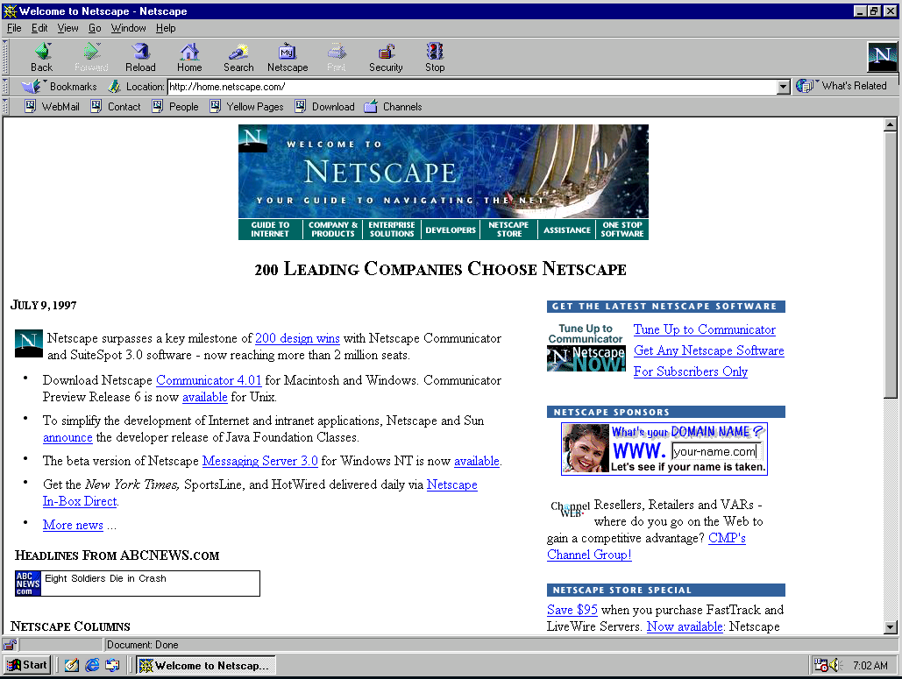
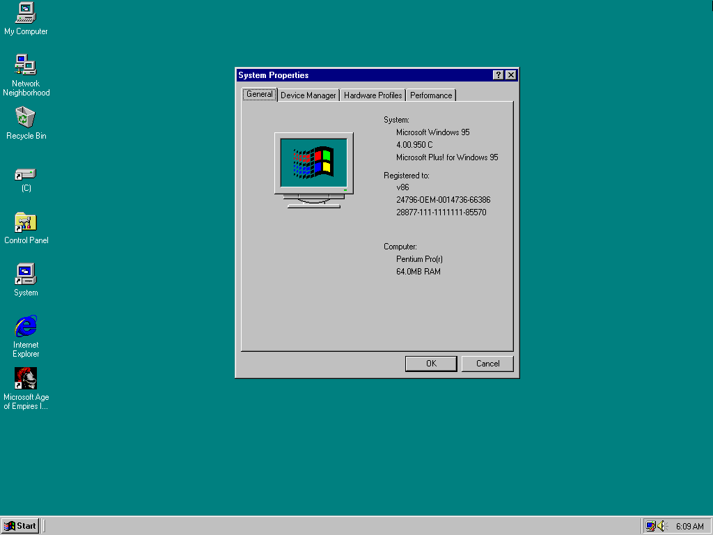
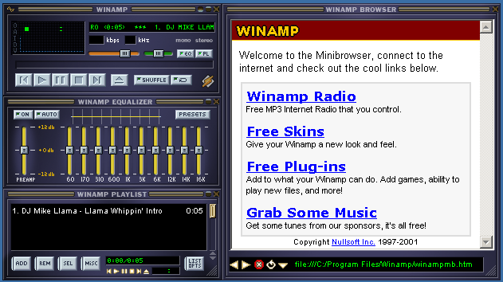

Navegador Web Netscape Navigator (1994)
Lanzado el 15 de diciembre de 1994, Netscape Navigator fue uno de los primeros navegadores web gráficos y desempeñó un papel crucial en la popularización de Internet. Ofrecía una interfaz amigable y funciones innovadoras para la época, como la capacidad de visualizar imágenes en línea con el texto. Su lanzamiento marcó el inicio de la primera "guerra de navegadores" contra Internet Explorer de Microsoft. Aunque eventualmente perdió cuota de mercado, sentó las bases para el desarrollo de navegadores modernos. Netscape también introdujo JavaScript, un lenguaje de programación clave para el desarrollo web.
Credit: Imagen Propia - Mat. V.
Sistema Operativo Microsoft Windows 95 (1995)
Lanzado el 24 de agosto de 1995, Windows 95 fue un sistema operativo que representó un salto significativo en la informática personal. Introdujo una interfaz de usuario gráfica con el icónico botón de "Inicio" y la barra de tareas, facilitando la navegación y el acceso a aplicaciones. Windows 95 también incorporó soporte mejorado para nombres de archivo largos y capacidades multitarea. Su lanzamiento estuvo acompañado de una campaña de marketing masiva, consolidando a Microsoft como líder en sistemas operativos. Este sistema sentó las bases para futuras versiones de Windows y transformó la experiencia informática para los usuarios domésticos y empresariales.
Credit: Imagen Propia - Mat. V.
Reproductor multimedia Winamp (1997)
Winamp, lanzado el 21 de abril de 1997, revolucionó la forma en que las personas reproducían archivos de audio en sus computadoras. Este reproductor multimedia era conocido por su interfaz personalizable y su soporte para una amplia variedad de formatos de audio. Permitía a los usuarios crear listas de reproducción y aplicar "skins" para cambiar su apariencia. Winamp se convirtió rápidamente en un favorito entre los entusiastas de la música digital. Su popularidad ayudó a establecer el estándar para los reproductores multimedia en la era del MP3.
Credit: Imagen Propia - Mat. V.